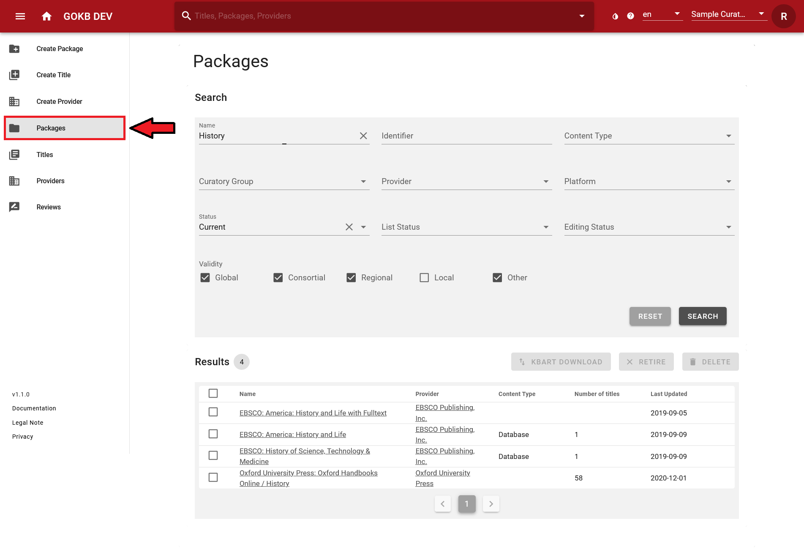

Create and edit packages
Get and check KBART files
Package and title data are imported into GOKB from KBART files.
KBART is a NISO standard for representing titles in a package of e-resources. A corresponding example KBART file, which also contains GOKB-relevant extensions of the standard as well as explanations of the individual KBART fields, can be found here: KBART Introduction
1. Validation of the KBART file
KBART files must comply with the KBART standard:
- The field names and contents must comply with the KBART standard or the enhanced
GOKB format. A list of all fields can be found here.
- All column headers must exist - even if a column has no values.
- The character encoding must be UTF-8.
- Tab as separator.
- Preferably alphabetical order of the titles.
- The file name must correspond to the standard.
- The file must contain all current titles of the package offered by the provider, i.e.
- The title scope and content must correspond to the negotiated package.
- The access URLs for individual titles must be correct. They must also be universally valid URLs, not institution-specific URLs like proxy URLs.
- Each resource must be tagged with identifiers.
- For serial publications like journals, the coverage information (years) must be correct. For example, if only volumes from 1996 onward are offered in a package, this must be reflected in the appropriate columns of the KBART list.
2. Mandatory fields for serials (e-journals, serials)
| Element | KBART field | Mandatory/Optional | Notes |
|---|---|---|---|
| Publication type | publication_type | Mandatory | Essential for distinction of E-Book and E-Journal |
| Publication title | publication_title | Mandatory | |
| ZDB identifier | zdb_id | Optional* | At least one identifier must be provided |
| Electronic ISSN | online_identifier | Optional* | At least one identifier must be provided |
| Print ISSN | print_identifier | Optional* | At least one identifier must be provided |
| Proprietary identifier used by the content provider | title_id | Optional* | At least one identifier must be provided |
| Coverage start | date_first_issue_online | Mandatory | |
| num_first_vol_online | Optional | ||
| num_first_issue_online | Optional | ||
| Coverage end | date_last_issue_online | Optional | |
| num_last_vol_online | Optional | ||
| num_last_issue_online | Optional | ||
| Coverage depth (fulltext, abstracts) | coverage_depth | Mandatory | |
| Title level URL | title_url | Mandatory | |
| Media type | medium | Optional |
3. Mandatory fields for monographs (e-books,audio and video streams)
| Element | KBART field | Mandatory/Optional | Notes |
|---|---|---|---|
| Publication type | publication_type | Mandatory | Essential for distinction of E-Book and E-Journal |
| Publication title | publication_title | Mandatory | |
| Electronic ISBN | online_identifier | Optional* | At least one identifier must be provided |
| Digital Object Identifier (DOI) | doi_identifier | Optional* | At least one identifier must be provided |
| Proprietary identifier used by the content provider | title_id | Optional* | At least one identifier must be provided |
| Print ISBN | print_identifier | Optional | |
| Date when monograph was published online | date_monograph_published_online | Mandatory | |
| Volume number | monograph_volume | Optional | |
| Edition number | monograph_edition | Optional | |
| Series statement for a series title | monograph_parent_collection_title | Optional | |
| Author | first_author | Optional | |
| Editor | first_editor | Optional | |
| Title level URL | title_url | Mandatory | |
| Media type (journal, book, database) | medium | Optional |
GOKB supports the enhancement of KBART with some proprietary fields:
- For serial publications, the ZDB id can be added to field
zdb_id. - Dates when a title is added or removed for a package can be added to
access_start_dateandaccess_end_datefields. These dates are useful for obtaining the historical status of a package at a particular time. - For series of monographs the series statement can be added to
monograph_parent_collection_titlefield. - Use field
mediumfor different media type.
4. Notes
- Make sure to import generic title lists into GOKB for each package. Special, locally tailored packages (e.g. different access URL via proxy) from these generic packages, should only be used in local ERM systems.
- For journal lists, make sure that each title has either a ZDB id, an e-ISSNs, or at least a corresponding print ISSN.
- All titles, especially from e-book packages, should have an internal,
provider specific title ID (
title_id), as other identifiers such as ISBNs are often ambiguous.
Searching a package
Use the "Packages" menu item on the left menu bar for the search of packages. You can search or filter curatory groups, names of the packages, provider identifier and status of the package. Select a package from the result list and you will get a detailed view of the package. If the package is assigned to your curatory group, you can edit it.

Create a package
The creation and editing of packages is done via web forms.
- Create a new package via "Create Package".
- To edit an existing package, search for it via "Packages" and select the package from the result list.
Step 1: General information
Add some general information for the package like name, provider and platform.

- Name: The official name of the package under which it is offered according to the provider. If you want to add data to an existing package, enter the exact name of the package in "Search" field. See guidelines for naming packages.
- URL: Add the URL of the website of the package provider.
- Provider: Select the provider of the package here. You can find the provider via a suggestion list if you enter the name or part of the provider name in the text field. See instructions for creating the provider.
- Platform: Select the platform of the package here. You can find the platform via a suggestion list by entering the name or a part of the platform name or the platform URL into the search fields. See instructions for creating a platform.
Finish this step by selecting the "Next" button.
Step 2: Package properties
Add information about the package, identifiers, name and variants.

- Package type (Scope): specify the package type
- Front File: a current package
- Archive package (Back File): An archived package
- Aggregator package
- Master File: A complete list of all resources offered by a provider.
- Content Type: specify the type of titles in the package
- Book
- Database
- Journal
- Mixed
- Restriction: Define if the package is offered worldwide (Global), regionally (Regional) or is specifically tailored to a consortia (Consortial) or a single institution (Local). If there is a restriction like "Regional", "Consortial" or "Local", you can specify this restriction in the text field. Please follow the guidelines for package titles.
- Package characteristics: Here you can specify characteristics of a package.
- Content is consistent: Does the package have the same content for all licensing libraries? – Yes if the content is the same for every library. No (default) if the content differs from library to library.
- Content may be split: Can an individual title selection be made from the package, e.g. on the basis of pick and choose? – Yes if single title selection is possible. No (default) if single title selection is not possible.
- Content is fixed: Can the content of the package change, i.e. can titles be added or removed over time? – Yes if the content remains fixed. No (default) if the content changes.
- Identifiers: Add unique identifiers for the package. Select a "Namespace" for the
identifier and enter the corresponding identifier.
- Internal identifier: If the package has an identifier of the provider itself, please select the namespace of the provider in the drop-down and enter the internal package identifier. This is important for later referencing.
- ISIL/Package Label: Official product label from the German "ISIL agency". You may find it at https://sigel.staatsbibliothek-berlin.de/nc/suche/. Please be sure to include the correct vendor package ISIL. The German ISIL Agency also issues ISIL for packages of alliance, national or consortia licenses. You should only add one ISIL referencing the packages.
- Name variants: Abbreviations or alternative name variants. This is recommended for common and well-known name variants that are not included in the official name. Name variants can be searched. Please note that the alternative name is a variant of the package name and not a variant of the provider name.
- Editing and List Statuss: In editing mode (not in creating mode) you can change the editing and list status of the package.
- Editing Status: Here you can set the status to Approved as soon as you have entered all necessary metadata of the package. The default value is In progress.
- List Status: Here you can set the status to Checked as soon as the package title list is correct and checked. The default value is In progress. You can't change the list status as long as there are open review requests appending to the package. The list status is important for importing into third-party systems such as FOLIO, because packages without the status Checked will not be taken over. Furthermore, after the status is changed to Checked, the respective date is automatically displayed in "Last list verification". This allows users of the package to see when it was last intellectually processed.
Finish this step by selecting the "Next" button.
Step 3: Package titles
You can import a KBART file (see "Uploading a KBART file") here and add individual package titles. This view corresponds to the view of step 4 in "Edit package".
If you have already uploaded package titles (so if you are now in step 4 of "Edit package"), you will see an overview of all titles included in the package with the date of the last update at this point.

- You can search for titles using the search field in header.
- You can filter titles using the "Status" selection drop-down menu, e.g. only current, retired or deleted titles.
Select a title from the list to get detailed information for it.
In the title overview as well as on each step in the "Edit package" mode, the date of the creation of the package and the date of the last update to the package data are displayed at the bottom of the page. The date of the update is important for third-party systems that retrieve data based on the last update (such as via the OAI-PMH interface).
Uploading a KBART file
Uploading package title via KBART files can be very time consuming. Therefore, you will not see the result in real time. After selecting the KBART file or setting the automatic import, finish editing the package. You will be informed about the titles import status via the "Dashboard".
1. Manual loading of a KBART file
You can load a KBART file by selecting the "KBART Import" button. A pop-up window opens, please enter:
- File: Select a KBART file from your hard disk.
- Namespace for
title_id: Please select the namespace of the identifier, see instruction.
In addition, you can choose between various import options:
- Partial Update: If you check this box only titles from the new KBART file will be added to the existing package.
- Delete removed titles: If you check this box package titles that are no longer included in the new KBART file will be marked as "deleted" in the existing package.
- Dry Run: If you check this box, the KBART file will only be processed as a test run.
The two options Partial Update and Delete removed titles are related to each other as follows:
- Partial Update = no, Delete removed titles = no > The status of the currently available package titles that are not contained in the KBART file is set to "retired".
- Partial Update = no, Delete removed titles = yes > The status of the currently existing package titles that are not contained in the KBART file is set to "deleted".
If you select Partial Update, the option Delete removed titles is ignored. It therefore makes no sense to link the two options:
- Partial Update = yes, Delete removed titles = no > The status of the currently existing package titles is not changed. Only the titles from the KBART file are added.
- Partial Update = yes, Delete removed titles = yes > The status of the currently existing package titles is not changed. Only the titles from the KBART file are added.
After uploading the file you will get statistics on validation errors. If necessary the KBART file has to be corrected manually and reloaded.
2. Automatic loading of a KBART file via URL
- URL: URL of the KBART file. The URL must link directly to the KBART file. If the
URL contains dates (e.g., http://example.org/kbart/examplepackage_2020-10-01.txt),
you must add the path parameter as variables (http://example.org/kbart/examplepackage_{YYYY-MM-DD}.txt). The variables
have to be capitals, lower case letters won't work:
- "Y" for the digits of the year
- "M" for the digits of the month number
- "D" for the digits of the day number
- Namespace: Please select the namespace of the identifier, see instruction.
- Update cycle: The timespan package for updates.
Namespace for title_id values
KBART allows different identifiers for title_id column. Select the corresponding namespace for the KBART
file. For updates of the package this is important, please specify the correct namespace.
Step 4: Summary
Summary of the selected settings. Your selected curatory group will be added automatically.